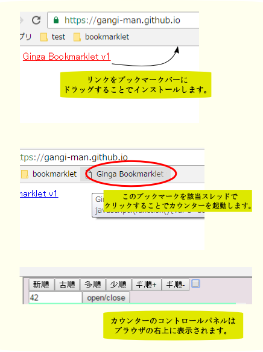

Ginga Bookmarklet v1
Ginga Counter
Ginga Counter とは
Ginga Counter はふたば★ちゃんねるのdice機能支援のためのbookmarkletです。
導入方法
ページ上のGinga Counter のリンクをブラウザのブックマークバーにドラッグ＆ドロップする事でブラウザにインストールします。
dice 機能を使ったふたばのスレッドでインストールしたbookmarkをクリックすることで使用します。

その他
Ginga Counterのソースはここにあります。
お友達にも教えてあげて下さいね。